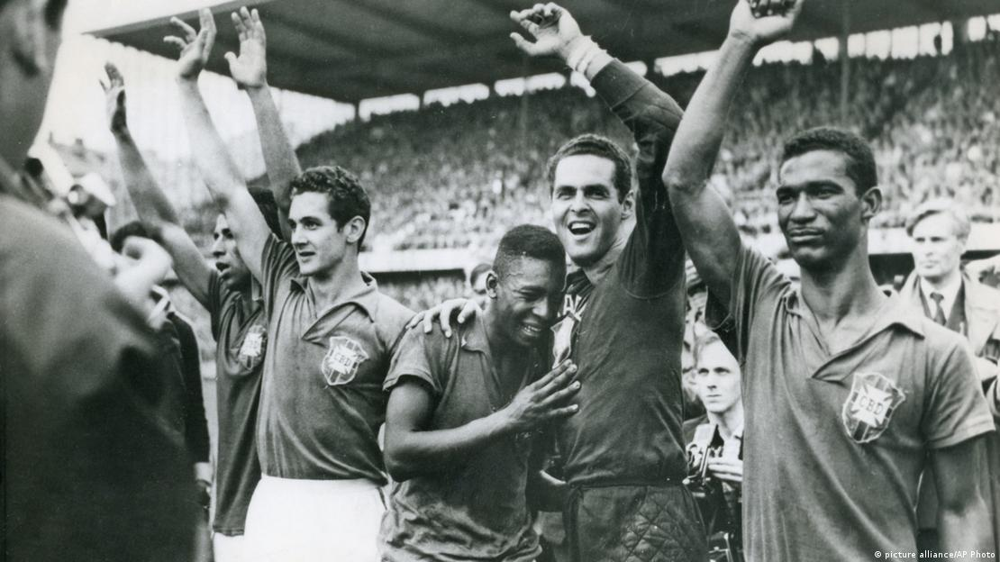

o primeiro torneio de futebol mais importante do mundo realizado no Uruguai e foi escolhido
graças ao centenário de independência do país e foi a única edição que teve a participação
de países convidados e consagrou naquele momento até então a bicampeã olímpica de futebol
na época como primeira vencedora da competição.
Copa do mundo de 1934
grande triunfo da azzurra
sobre o comando do ditador Benito Mussolini a itália sediou o segundo grande torneio de futebol
com o apoio maciço da população na época e com a ausência do atual campeão mundial uruguai como
protesto pelo boicote dos europeus ao mundial de 1930 e foi a primeira competição com eliminatórias
nas histórias das copas.
Copa do mundo de 1938
gol de bicicleta,bi da azzurra e mais um boicote das américas
com o grande sucesso italiano na copa passada houve grande mobilização do governo nazista para a
a Alemanha sediar a copa de 1938 além da Argentina e a própria França que veio a sediar a competição.
Devido ao boicote dos europeus à canditadura e a desavença entre europeus e sul-americanos no processo
houve um grande boicote de grandes seleções sul americanas nesse torneio fazendo com que o Brasil e Cuba
entrassem no torneio sem passar pelas eliminatórias
Copa do mundo de 1950
frustração no maracanazo
Mesmo fazendo uma campanha que parecia quase imbatível goleando várias seleções e precisando apenas de
um empate no jogo decisivo contra a celeste o uruguai se consagra bicampeão mundial e com destaque do
grande atacante Alcides Ghiggia (autor do gol do título uruguaio) que calou os quase 200000 torcedores
brasileiros no maracanazo
Copa do mundo de 1954
gigante derrubado pela arbitragem
Mesmo fazendo uma campanha sensacional derrotando o seu algoz da final na fase de grupos e superando
a própria seleção brasileira em um dos jogos mais violentos do torneio a seleção húngara deixa o título
escapar para grande seleção da alemanha e com um gol polêmico de empate na grande decisão anulado pela
arbitragem feito pelo grande craque puskas
Copa do mundo de 1954

primeirotitulobrasileiro
após a frustração de perder a copa de 1950 a seleção canarinho finalmente chega a redenção e se consagra
com seu primeiro título mundial 8 anos depois tendo destaque de Edson Arantes do nascimento(o eterno pelé)
que na época só tinha 17 anos